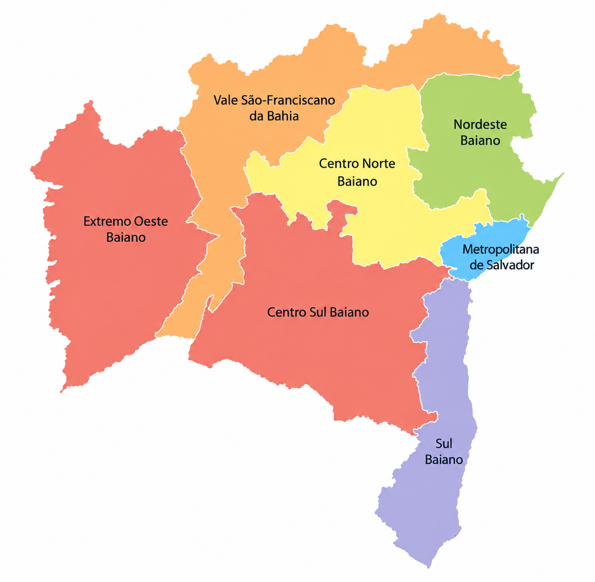

Encontre um campus
Selecione uma tipologia ou busque pelo nome.

Selecione um ponto para consultar o campus. A lista permite explorar todos os nomes.
| Campus | Ato normativo | Tipologia | Localização |
|---|
Nenhum campus encontrado. Tente outro nome ou tipologia.